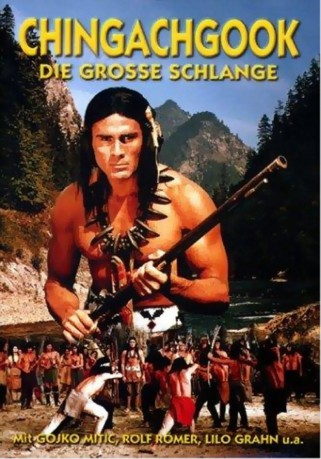

#2336 Chingachgook, die grosse Schlange
 
 IMDB-Wertung: 6.2 / 10
IMDB-Wertung: 6.2 / 10  Metascore: 0
Metascore: 0 
Im Kampf von Engländern und Franzosen um die Kolonien in Kanada von 1740 geraten die ansässigen Indianerstämme zwischen die Fronten. Die Weißen hetzen die Ureinwohner gegeneinander auf. Deshalb entführen die Huronen die Tochter des Häuptlings der Delawaren, Wahtawah. Der letzte Mohikaner Chingachgook macht sich mit seinem Freund Wildtöter daran die ihm versprochene Wahtawah zu befreien.
Jahr: 1967
Dauer: 92 Minuten
FSK: 6
Land: Ost-Deutschland Studio: VEB Progress Film-VertriebTonspuren:
Untertitel:
Auflösung: 1080p (1920x816) Größe: 5601 MB
Genre: Drama, Abenteuer, Western, Liebe
Regisseur: Richard Groschopp
Drehbuch: James Fenimore Cooper, Wolfgang Ebeling, Richard Groschopp, Egon Günther
Soundtrack: Wilhelm Neef
Darsteller:
- Milan Jablonsky als Flinker Elch / Quick Elk
 Gojko Mitic als Chingachgook, die Große Schlange
Gojko Mitic als Chingachgook, die Große Schlange- Rolf Römer als Wildtöter / Deerslayer
- Helmut Schreiber als Tom Hutter
- Jürgen Frohriep als Harry Hurry
- Lilo Grahn als Judith Hutter, die Tochter
- Andrea Drahota als Wahtawa
- Johannes Knittel als Gespaltene Eiche
- Adolf Peter Hoffmann als Delewaren-Häuptling
- Heinz Klevenow Jr. als Pfeilspitze - Hurone
- Horst Preusker als Hauptmann Warley, engl. Offizier
- Rudolf Ulrich als Englischer Corporal
- Karl Zugowski als Thornton, engl. Fähnrich
- Günter Dornag als Rider , uncredited
- Hermann Gall als Herald , uncredited
- Leopoldine Kuhring als Girl on Watch , uncredited
- Hans-Peter Pieper als Chief of the Elders , uncredited
- Günter Schaumburg als Roter Büffel / Red Buffalo , uncredited
- Hans-Joachim Stelzer als Watchman , uncredited
- Karl Sturm als Chingachgook , uncredited
Datei: X:\HD-Western-Collections\DDR-Western\Chingachgook, die grosse Schlange (1967, FSK6, 1920x816).mkv seit 31.10.2015
Festplatte: HD Eastern+Western
 Es gibt insgesamt 15 Filme in der Gruppe 'HD-Western-Collections\DDR-Western'
Es gibt insgesamt 15 Filme in der Gruppe 'HD-Western-Collections\DDR-Western'